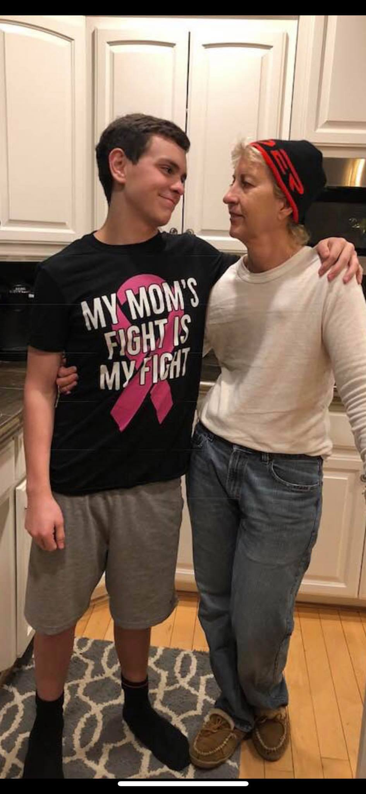

Welcome to the Bio of Jen Voi
This is the story of Jen's Cancer fight. When you think of a "Warrior" you think of someone with weapons and armor. You see someone covered in blood after the fight. They look triumphant.
They never seem meek, or humble, or quietly full of gratitude. When I think of a "Warrior", I think differently. Not all "Warrior's" have visible battle scars, some hold their scars on the
inside. Some like Jen are humble, and quietly full of gratitude, and though she won't tell you, the fight was long and hard. This is my Friend Jen Warrior Voi.